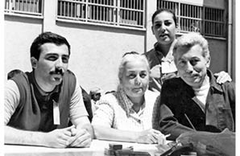

“Bu Mücadele Çok Önemli. Bunu Hiç Unutma!”
Işık Erem11
Babam Müşfik Erem 12 Eylül döneminde içeri alındı. 5.5 sene cezaevinde kaldı. Yasal bir parti olan Türkiye İşçi Partisi’nin Merkez Yönetim Kurulu Üyesi olarak 141 ve 142. maddelerden suçlandı. İstanbul Bayrampaşa ve Hasdal cezaevlerinde kaldı.
Biz ailece İstanbul’daydık. Darbe öncesi normal bir aile hayatımız vardı. Babam dışında tabii. Kalabalık ve mutlu bir aileydik, ben de mutlu bir çocuktum ama babamı çok az görüyorduk siyasi ve mesleki çalışmalarının yoğunluğu nedeniyle. Bize aile ortamını sağlayan annemdi her zaman.
Biz iki kardeşiz. Babam da her zaman ailesine sahip çıkan bir insandı ama sadece zaman ayırmakta problem yaşıyordu. Şunu söyleyebilirim, ilk Türkiye İşçi Partisi kapatılıp ikincisi açılana kadar geçen süre, bizim çocuk olarak belki de en mutlu dönemimizdi. O ara dönemde babam, bizi her pazar sinemaya götürüyor, daha çok ilgileniyordu. Annem çalışmıyordu, ev kadınıydı. Biz ilkokuldayken evde pek siyaset konuşulmazdı ama daha sonraki dönemlerde yani 12 Eylül öncesi biz biraz büyüdüğümüz zaman tabii ki konuşuluyordu. Ayrıca babamın arkadaşları gidip geliyordu, toplantılardan sonra bizim evde buluşuluyordu. Oldukça politik bir ev sayılırdı o dönemde.
Darbe dönemi geldiğinde ben de siyasi yaşam içindeydim artık. Zaten bizim için beklenilen bir şeydi. TİP üyesiydim ve TİP bunu daha önceden görmüş ve söylemişti. Çok beklemediğimiz bir şey değildi. Bir gece önceden belki hissetmiştik ama tabii o sabahki duygu çok farklıydı. Mesela bir arkadaşımın kapıya gelip ben gidiyorum dediğini hatırlıyorum. O beni çok etkilemişti. Babam o gün evdeydi. Babam zaten birkaç ay sonra tutuklandı. Bir dönem dışarıdaydı 12 Eylül’den sonra. O sabah bir telaş olduğunu söyleyemem. Tabii ki gene de bir şaşkınlık vardı ama ben kişi olarak öyle korku veya panik hissettiğimi hatırlamıyorum.
Zaten o dönemde böyle bir şey beklendiği için bir gece babam aileyi topladı. Sanıyorum Parti’de de kim yurtdışına gidecek, kim kalacak gibi bir konu konuşuluyordu. Bunu evde bize çok üstü kapalı bir biçimde sorduğunu hatırlıyorum. Kalmaya karar verdiğini ve bunun da bir nedeninin biz olduğumuzu söylediğini hatırlıyorum. O yüzden böyle bir şeye hazırlıklıydım. Biliyordum bir gün tutuklanacağını. Tabii darbe öncesinde hareketli bir hayatımız vardı, daha sonra çok durağan oldu aslında o hayat. Kesintiye uğrayan bizim siyasal yaşamımızdı. Çünkü mesaimizin çok büyük bir kısmını okula gitmektense ona ayırıyorduk. Üniversitedeydim ben o sırada. Aşağı yukarı 12 saatimin 6-7 saatini siyasi hareket içerisinde geçiriyordum. Çok sevdiğim de bir çevrem vardı. Darbe dönemi benim için tamamen bunlardan yoksun kalmaktı. Daha normal, sıradan bir hayatım olmaya başladı. Okulda ayrı bir paylaşımım vardı, onun dışında da ayrı bir siyasi hayatım vardı. Zaten bizim dönemimizde okullarda siyasi olarak aktif insan çok fazlaydı.
Babamın mücadelesini de onaylıyordum doğal olarak. Kendim, siyaseten aktif olunca babamın neden bizimle zaman geçiremediğini daha iyi anlamıştım. Onu çok iyi anlayabildiğimi biliyorum. Babama kızgınlığım olmadı. Tam tersine gurur duydum.
Ben şöyle düşünüyorum, aslında darbeyle politik olmayan ailelerin hayatında da birçok şeyin değiştiğine inanıyorum. Çünkü en azından o insanların çevresinde komşuları, arkadaşları olarak belli bir çevre vardı ve onlar da etkilendi. Bu dalga dalga da giden bir şeydi belki. Herkes bir miktar bundan etkilendi diye düşünüyorum açıkçası ama tabii ki içinde olanlar çok daha fazla etkilendi.
Solcu olmamızdan dolayı bizden uzak duran veya selam vermeyen kişiler pek olmadı. En çok aynı apartmanda oturduğumuz dayımdan tepki gördük belki ama o her zaman babama karşı tepkiliydi zaten. Diğerlerinden tam tersi destek de aldık. Babam cezaevine girdikten sonra hem maddi hem manevi yardımları oldu bize. Ben bu süreçte yarı zamanlı çalışmaya başladım. Ders verdim. Annemin zaten belli bir geliri vardı, çalışmamasına rağmen, öyle idare ettik. Bir de çevremizdeki insanların katkılarıyla, destek olmalarıyla ayakta kalabildik.
Canımı En Çok Acıtan Şeyler...
Ben babam içerideyken, o dönemde evlendim. Babam nikâhımızı ve daha sonra doğan torununu göremedi. Oğlumun haberini aldıktan sonra uzun bir dönem götüremedim onu cezaevine. O dönemde babamın hissettiklerini bilmek canımı en çok yakan şeylerden biriydi. Torunu olmuştu ve görememişti. Eminim kafasında birçok soru işareti vardı. O benim için çok can yakıcıydı. Oğlum üç dört aylıktı, bayramda bir açık görüş oldu. İlk defa o zaman gördü, içi rahat etti. Babam dışarı çıktığında oğlum 8 aylıktı zaten.
Babamın tutukluluğu süresince uzun bir dönem görüşemediğimiz de oldu ama şöyle söyleyeyim: O 5.5 yıl içinde ben yalnızca doğum yaptığım dönemde gidemedim, 3-4 ay. Onun dışında her hafta görüş oluyordu ve üstelik iki üç dakikalık görüşlerdi bunlar. O 2-3 dakikalık görüş için biz bütün günümüzü yollarda geçiriyorduk. Tabii çok heyecanlı bir şekilde oraya gidiyorduk. Çünkü görebilecek miyiz, nasıl göreceğiz, iyi mi kötü mü gibi düşünüp saatlerce bekledikten sonra sadece 2-3 dakika görüşebiliyorduk. Bir dönem de babam, kendi arkadaşlarının dışında kalarak belli bir dilekçeye imza attığı için ya da taleplerde bulunduğu için farklı bir koğuşa gönderildi ve uzun bir dönem de görüşemedik. Hücreye almadılar ama farklı fraksiyonlardaki, daha keskin diye tabir edeyim, kişilerin olduğu farklı bir bölüme gönderdiler. Herhalde 6-7 ay kadar bir görüş yasağı da oldu. Biz o dönemde de her hafta görüş günü gitmeye devam ettik. Bence en zor dönem o dönemdi. Hiç haber alamıyorsunuz ve hiçbir şekilde görüşemiyorsunuz ama görüşebiliriz diye her hafta gidip orada bekliyorsunuz. Sonuçta orada olduğunu biliyorduk.

Işık Erem, ağabeyi ve annesiyle cezaevinde babasını ziyarette
Cezaevinin kapısında bizim gibi bekleyen çocuklar vardı ama çoğu benden küçüktü zaten. Ben pek çocuk sayılmazdım o dönemde. Öyle ilginç bir sürü hikâyemiz var aslında. Avukat Alp Selek, babamın parti ve koğuş arkadaşı. Ailesi bize yakın oturuyordu. Eşi Ayla Abla’nın Anadol arabası vardı o zaman, hepimiz Alp ağabeyinin kızları Pınar ve Seyda doluşuruz Anadol’a gideriz bir kıyamete. Pınar ve Seyda o zaman ilkokul öğrencisi. İkisi de düz duvara tırmanan cinsten. Ayla Abla zaten çok heyecanlı oluyordu görüş günleri. Ben arabada kızları zaptedebilmek için masal üzerine masal anlatıyorum. Yine böyle bir gün, geldik cezaevine herkes indi arabadan ben bir ayağımı dışarı attığımda Ayla Abla bastı gaza, arabayı park edecek. Bir ayağım içeride biri dışarıda koşuyorum herkes çığlık çığlığa bağırıyor, neyse fark etti, ucuz atlattık. Sonra bekleme süresince masallar oyunlar... Pınar çok girişkendi. Bazen askerlerin kaçamak gülüşlerine bile neden olurdu. Böyle piknik havasında geçiyordu bazen. Telaşlı gidiliyordu, ilginç, komik olaylar olabiliyordu. Değişik paylaşımlar vardı orada.
Hâlâ görüştüğüm kimse kalmadı pek. İlginç bir anım var, onu anlatabilirim. Bu içimi acıtan bir şey olduğu için değil, ironik olduğu için aklımda kaldı sanırım. Babam aynı zamanda mimardı. Mesleğine de çok zaman ayırmış bir insandı. Zaten hayatındaki öncelikleri siyasi yaşamı ve mimarlığıydı. Severdi mesleğini çok. Bir görüşte pantolon getirdi, annem herhalde. İçeriye gönderdik, ertesi hafta pantolon geri geldi ve babam şey dedi, işte bir paçası, diğer paçasından iki santimetre uzun olmuş, lütfen düzeltir misin? Benim için çok değişik bir olay, onun için anlatmadan geçemeyeceğim.
Darbe dönemi yaşadıklarımız genelde bana özel olaylardı, çok işin içinde, yakınımda olan insanlar dışında pek konuşmadım. Konuşmak gerekmiyor diye düşünüyordum. Çünkü o özel bir şeydi. O yüzden belki konuşmuyordum, belki de bu yapısal bir şey, aynı şey babamda da vardır. Az konuşan bir insandı. Siyaseti arkadaşlarıyla çok konuşurdu ama bunu bize yansıtmasında az konuşan bir insandı.
Bütün bunlara rağmen ruhsal ve fonksiyonel olarak sağlıklı bir ailede büyüdüğümü düşünüyorum. Standart bir aile değildi ama sağlıklı bir aileydi. Sonuçta ailenin normal dengesini sarsabilecek olayların yaşandığı bir dönemden geçtik. Yine de bu dengeyi başta annem olmak üzere, en yakınımızdaki babamın kardeşleriyle birlikte sağladığımızı düşünüyorum. Hep bir aradaydık. Çok yakın oturmuyorduk belki ama sürekli gider gelirdik. Hatta bir dönem halamda bile kaldık babam içerideyken, kızı ilkokula gidiyordu, o da çalışıyordu. Hep beraber aynı evde oturduk. Ve çok güzel bir dönemdi o aslında. Acılı, babamın içeride olması sebebiyle doğal olarak acılı bir dönemdi ama akşamları çok eğlendiğimizi hatırlıyorum. Annem gene toparlayıcıydı, sağlam durmaya çalışıyordu. Zaman zaman tabii duygusallaşıyordu ama yine de aile düzenini olduğu gibi sürdürmeye çalışıyordu bir taraftan. Temel taşın annem olduğunu söyleyebilirim. Bu dönemde ve sonrasında profesyonel anlamda bir psikolojik destek almadık. Gerek duymadık, aile olarak bunun üstesinden geldik.
Yine aynı mücadeleyi verirdim herhalde diye düşünüyorum. Bu biraz da yapı ve karakter meselesi. Babamın parti çalışmalarına gitmezdim. Çok uzun bir dönem ben, babamın siyasi bir hayatı olduğunu da bilmiyordum zaten. Özel olarak gizlenen bir şey değildi bence. Daha sonra nedenini ona sorduğumda söylediği şey şuydu; benden etkilenmenizi istemediğim için sessiz kaldım. Öyle bağımsız ve özerk insanlar olabilelim, inisiyatif kullanabilelim diye konuşulmamıştı siyaset. Konuşmamasının nedenini öyle açıklamıştı en azından. Herhalde orta son veya lisede öğrendim aslında bunu. Ben de artık kendi kendime bir şeyleri sorgulamaya başladığım zaman, ona sorduğumda aldığım cevaplardan, o şekilde öğrenmişimdir. Babam ben doğduğumdan beri siyasetin içerisindeydi. Özel olarak tabii ki saklanmadı, bunlar sadece histi. Çünkü ben 12 Mart dönemini de hatırlıyorum. 12 Mart dönemi çocukluk hissiyatımla bir şeylerin olduğunu anladığım bir dönemdi. O zaman ben ilkokul 5’te olabilirim. O benim için daha çok korku ve panik veren bir şeydi. Çünkü ne olduğunu bilmiyordum, bir şeylerin etrafımızda döndüğünün farkındaydım ve hissediyordum. O zaman babam, acaba ne zaman içeri girebilir diye düşündüğüm çok oldu. İlk korku 12 Mart dönemindeydi. Siyasi bilince üniversiteye başladığım sırada eriştim. Aslında kardeşim benden daha önce “aydınlandı”. 1977’de üniversiteye başladığımda zaten çok karışık bir dönemdi o dönem. Beni tetikleyen, üniversitedeki 16 Mart 1978 olayıydı açıkçası. Bizden büyüklerdi onlar, tam olarak arkadaşımız değillerdi ama önümüzden geçip giden insanların 5 dakika sonra büyük bir gürültünün ardından koştuğumuzda gördüğümüz manzaraları beni çok etkiledi.
12 Eylül’ün bugüne dair tercihlerimin hepsini şekillendirdiğini ve etkilediğini düşünmüyorum ama manevi duruşumda bir etkisi olmuş olabilir. Siyaseten daha sert bir insan olduğumu söyleyemem. Çünkü 12 Eylül döneminde anne olmak ve ondan sonra belli bir aile hayatının olması beni herhalde daha yumuşak bir insan yaptı eskisine göre. Eskiden daha sert bir insandım. Annelik çok farklı bir şey. İnsanı yumuşatan ve aynı zamanda da güçlendiren bir şey gerçekten. Annemi daha fazla herhalde o dönemde hissettim açıkçası. Annemle anlaşamayan bir insandım, daha öncesinde. Çocuğum olduktan sonra onu daha iyi anlamaya başladım.
Cezaevinden Sonra
Ondan sonrası daha farklıydı. Çıktığı gün, ben onlarda kaldım, o bir hafta süresince de babamlarla birlikteydim. Oğlum 8 aylıktı, sabah ilk defa babam odadan çıktı, ben oğluma mama yediriyordum. Doğu da babama, kim bu diye baktı ama babam yaklaşmadı, öpmedi, geldi karşısına oturdu ve çok uzun süre bakıştılar. Baba, niye sevmiyorsun diye sordum. Korkutmak istemiyorum dedi. Böyle bir hafta 10 gün kadar ısınma turları yaptılar. Ancak ondan sonra dede-torun ilişkisi başladı aralarında. Girdiği döneme göre babam, daha farklıydı çıktığı zaman. Çok ağır işkence gördüğünü sanmıyorum. Çünkü girdiğinde elli yaşındaydı, elli beş yaşında çıktı. Bazen onu düşünüyorum, ben şu anda o yaşlardayım ve gerçekten zor bir şey aslına bakarsanız bu yaş için o dönemde hapishanede olmak. Fiziki olmasa da manevi işkence mutlaka görmüştür. Bunun etkisinin de daha sonraki hayatında devam ettiğini düşünüyorum. Ben babamı 4.5 ay önce kaybettim, yeni kaybettim. Parkinson hastalığı vardı. Mesela hastalığında, zor hayatının etkili olduğunu düşünüyorum. Çünkü onun dışında çok sağlıklı bir insandı. Tabii çıktığı zaman çok daha az konuşuyordu, yürümesi bile değişmişti. Hatta ona hapishane yürüyüşü, mahkûm yürüyüşü diyorlarmış. Özel bir yürüyüş şekilleri varmış onların. Mahkemeye elleri arkada zincirli olarak geliyorlardı, birbirlerine bağlı olarak, ayakları da. Daha böyle ayağını sürterek, değişik bir yürüyüş tarzı o. Ama yine de duruşundan bir şey kaybetmedi asla.
Arkadaşlarıyla buluştuğu o kalabalık yemekler devam etti, tabii ki. Daha sonra da politik hayatını devam ettirmeye çalıştı çok aktif olmasa bile. Asla vazgeçmedi. Size şöyle bir şey söyleyeyim: cezaevindeki hayatıyla ilgili ya da anılarıyla ilgili hiçbir şey anlatmadı. En son dönemde hastayken, cezaevinde geçirdiği dönemle uğraşıyordu, anlatmıyordu çok net bir şey ama sürekli aklı oradaydı ve zaman zaman, blokajlar da olduğu için kafasında, “Gelecekler, alacaklar... askerler” derdi. Ben de sormazdım. Biz biraz sormayan ve fazla anlatmayan bir aileyiz. Siyasi boyutu işin dışında, yapı olarak böyleyiz. Ama ölmesine çok yakın şunu da söyledi bir gün “Bu mücadele çok önemli. Bunu hiç unutma.” Her şeye rağmen, o yaşta, bir sabah uyanıp bunu söyleyecek bir insandı. Ne yaşanmış olursa olsun aslolanın ne olduğunu söylüyor size.
Kendi Kuşağım
Klasik tanım olmasın, kayıp kuşak gibi bir şey olmasın. Ama benim kuşağım bizden sonraki kuşaklara göre daha duygusal, toplumsal sorumluluğa vâkıf bir kuşak bana sorarsanız. Belli manevi değerlere daha sahip ve zamanı nedeniyle politik yaşamda yer almış bir kuşak. Çoğu şimdi ne yazık ki bu tür bir hayatın içinde değil. 12 Eylül’de Taksim’e gittim, birkaç gün önce, 12 Eylül için eylem vardı. Şöyle bir baktığımda o kuşaktan çok az insan vardı orada. Daha çok gençler vardı. Belki üzücü ama aynı zamanda umut verici. Gerçekten yaşananların boşa olmadığını hissettirmesi açısından.
Oğlumla 12 Eylül’ü konuşmuyoruz. Siyasetle pek ilgilenmiyor.
Tepki olduğunu sanmıyorum. Çünkü o bazı şeyleri hiç yaşamadı. Onun genel bir eğilim olduğunu düşünüyorum gençler arasında. Tabii ki siyasi bir görüşü ve duruşu var ama fiilen siyasetin içinde değil. Okulu yeni bitti, çalışma hayatına başlayacak diye umuyorum.
12 Eylül Davası
Çok yalan bir dava olduğunu düşünüyorum. Tabii ki 12 Eylül yargılansın ama adam gibi yargılansın. Bir yere varsa da bir manası yok diye düşünüyorum. Cezaevine girseler dahi bir şey değişmez, bunu tarihsel anlamda yargılamak gerektiğini düşünüyorum. Duruşmalara da gitmedim.
11 1959 doğumlu. İktisatçı. Cezaevine girdiğinde babası Müşfik Erem 50, kendisi ise 21 yaşındaydı.